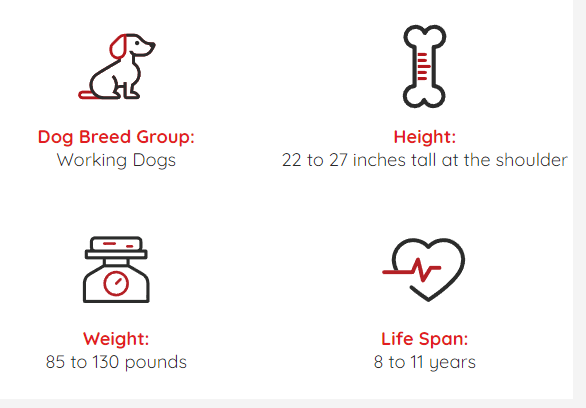

About The Breed
The Rottweiler is a robust working breed of great strength descended from the mastiffs of the Roman legions. A gentle playmate and protector within the family circle, the Rottie observes the outside world with a self-assured aloofness. A male Rottweiler will stand anywhere from 24 to 27 muscular inches at the shoulder; females run a bit smaller and lighter. The glistening, short black coat with smart rust markings add to the picture of imposing strength. A thickly muscled hindquarters powers the Rottie's effortless trotting gait. A well-bred and properly raised Rottie will be calm and confident, courageous but not unduly aggressive. The aloof demeanor these world-class guardians present to outsiders belies the playfulness, and downright silliness, that endear Rotties to their loved ones. (No one told the Rottie he's not a toy breed, so he is liable plop onto your lap for a cuddle.) Early training and socialization will harness a Rottie's territorial instincts in a positive way.
Is This Breed Right For You?
Affectionate with family - 5/5
How affectionate a breed is likely to be with family members, or other people he knows well. Some breeds can be aloof with everyone but their owner, while other breeds treat everyone they know like their best friend.
Good with young children - 3/5
A breed's level of tolerance and patience with childrens' behavior, and overall family-friendly nature. Dogs should always be supervised around young children, or children of any age who have little exposure to dog
Good with other dogs - 3/5
How generally friendly a breed is towards other dogs. Dogs should always be supervised for interactions and introductions with other dogs, but some breeds are innately more likely to get along with other dogs, both at home and in public.
Shedding level - 3/5
How much fur and hair you can expect the breed to leave behind. Breeds with high shedding will need to be brushed more frequently, are more likely to trigger certain types of allergies, and are more likely to require more consistent vacuuming and lint-rolling.
Adaptibility level - 4/5
How easily a breed handles change. This can include changes in living conditions, noise, weather, daily schedule, and other variations in day-to-day life.